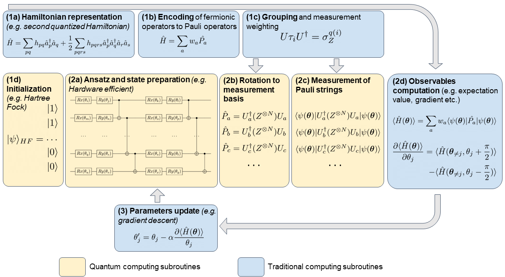

One initial algorithm to estimate the eigenenergies of a quantum Hamiltonian was quantum phase estimation. In it, one encodes the eigenenergies, one binary bit at a time (up to \( n \) bits), into the complex phases of the quantum states of the Hilbert space for \( n \) qubits. It does this by applying powers of controlled unitary evolution operators to a quantum state that can be expanded in terms of the Hamiltonian's eigenvectors of interest. The eigenenergies are encoded into the complex phases in such a way that taking the inverse quantum Fourier transformation (see Hundt sections 6.1-6.2) of the states into which the eigen-energies are encoded results in a measurement probability distribution that has peaks around the bit strings that represent a binary fraction which corresponds to the eigen-energies of the quantum state acted upon by the controlled unitary operators.
While quantum phase estimation (QPE) is provably efficient, non-hybrid, and non-variational, the number of qubits and length of circuits required is too great for our NISQ era quantum computers. Thus, QPE is only efficiently applicable to large, fault-tolerant quantum computers that likely won't exist in the near, but the far future.
Therefore, a different algorithm for finding the eigen-energies of a quantum Hamiltonian was put forth in 2014 called the variational quantum eigensolver, commonly referred to as VQE. The algorithm is hybrid, meaning that it requires the use of both a quantum computer and a classical computer. It is also variational, meaning that it relies, ultimately, on solving an optimization problem by varying parameters and thus is not as deterministic as QPE. The variational quantum eigensolver is based on the variational principle:
Out starting point is the Rayleigh-Ritz variational principle states that for a given Hamiltonian \( H \), the expectation value of a trial state or just ansatz \( \vert \psi \rangle \) puts a lower bound on the ground state energy \( E_0 \).
$$ \frac{\langle \psi \vert \mathcal{H}\vert \psi \rangle}{\langle \psi \vert \psi \rangle} \geq E_0. $$The ansatz is typically chosen to be a parameterized superposition of basis states that can be varied to improve the energy estimate, \( \vert \psi\rangle \equiv \vert \psi(\boldsymbol{\theta})\rangle \) where \( \boldsymbol{\theta} = (\theta_1, \ldots, \theta_M) \) are the \( M \) optimization parameters.
The expectation value of a Hamiltonian \( \mathcal{H} \) in a state \( |\psi(\theta)\rangle \) parameterized by a set of angles \( \theta \), is always greater than or equal to the minimum eigen-energy \( E_0 \). To see this, let \( |n\rangle \) be the eigenstates of \( \mathcal{H} \), that is
$$ \mathcal{H}|n\rangle=E_n|n\rangle. $$We can then expand our state \( |\psi(\theta)\rangle \) in terms of the eigenstates
$$ |\psi(\theta)\rangle=\sum_nc_n|n\rangle, $$and insert this in the expression for the expectation value (note that we drop the denominator in the Rayleigh-Ritz ratio)
$$ \langle\psi(\theta)\vert \mathcal{H}\vert\psi(\theta)\rangle=\sum_{nm}c^*_mc_n\langle m\vert\mathcal{H}\vert n \rangle =\sum_{nm}c^*_mc_nE_n\langle m\vert n \rangle=\sum_{nm}\delta_{nm}c^*_mc_nE_n=\sum_{n}\vert c_n\vert^2E_n \geq E_0\sum_{n}\vert c_n\vert^2=E_0, $$which implies that we can minimize over the set of angles \( \theta \) and arrive at the ground state energy \( E_0 \)
$$ \min_\theta \ \langle\psi(\theta)\vert \mathcal{H}\vert \psi(\theta)\rangle=E_0. $$Using this fact, the VQE algorithm can be broken down into the following steps
This loop continues until the classical optimization algorithm terminates which results in a set of angles \( \theta_{\text{min}} \) that characterize the ground state \( |\phi(\theta_{\text{min}})\rangle \) and an estimate for the ground state energy \( \langle\psi(\theta_{\text{min}})\vert\mathcal{H}\vert\psi(\theta_{\text{min}})\rangle \).

In quantum computing, measurements are typically performed on one qubit at a time due to a combination of theoretical, practical, and algorithmic considerations:
While joint measurements are theoretically possible, the dominant practice of measuring one qubit at a time stems from algorithmic adaptability, hardware limitations, and the need to minimize quantum state disturbance. This approach balances efficiency, practicality, and the constraints of current quantum systems.
import numpy as np
import matplotlib.pyplot as plt
import seaborn as sns; sns.set_theme(font_scale=1.5)
from tqdm import tqdm
sigma_x = np.array([[0, 1], [1, 0]])
sigma_y = np.array([[0, -1j], [1j, 0]])
sigma_z = np.array([[1, 0], [0, -1]])
I = np.eye(2)
def Hamiltonian(lmb):
E1 = 0
E2 = 4
V11 = 3
V22 = -3
V12 = 0.2
V21 = 0.2
eps = (E1 + E2) / 2
omega = (E1 - E2) / 2
c = (V11 + V22) / 2
omega_z = (V11 - V22) / 2
omega_x = V12
H0 = eps * I + omega * sigma_z
H1 = c * I + omega_z * sigma_z + omega_x * sigma_x
return H0 + lmb * H1
lmbvalues_ana = np.arange(0, 1, 0.01)
eigvals_ana = np.zeros((len(lmbvalues_ana), 2))
for index, lmb in enumerate(lmbvalues_ana):
H = Hamiltonian(lmb)
eigen, eigvecs = np.linalg.eig(H)
permute = eigen.argsort()
eigvals_ana[index] = eigen[permute]
eigvecs = eigvecs[:,permute]
fig, axs = plt.subplots(1, 1, figsize=(10, 10))
for i in range(2):
axs.plot(lmbvalues_ana, eigvals_ana[:,i], label=f'$E_{i+1}$')
axs.set_xlabel(r'$\lambda$')
axs.set_ylabel('Energy')
axs.legend()
plt.show()
This was the standard eigenvalue problem. Let us now switch to our own implementation of the VQE.
from qc import *
def prepare_state(theta, phi, target = None):
I = np.eye(2)
sigma_x = np.array([[0, 1], [1, 0]])
sigma_y = np.array([[0, -1j], [1j, 0]])
state = np.array([1, 0])
Rx = np.cos(theta/2) * I - 1j * np.sin(theta/2) * sigma_x
Ry = np.cos(phi/2) * I - 1j * np.sin(phi/2) * sigma_y
state = Ry @ Rx @ state
if target is not None:
state = target
return state
def get_energy(angles, lmb, number_shots, target = None):
theta, phi = angles[0], angles[1]
# print(f'Theta = {theta}, Phi = {phi}')
E1 = 0; E2 = 4; V11 = 3; V22 = -3; V12 = 0.2; V21 = 0.2
eps = (E1 + E2) / 2; omega = (E1 - E2) / 2; c = (V11 + V22) / 2; omega_z = (V11 - V22) / 2; omega_x = V12
init_state = prepare_state(theta, phi, target)
qubit = One_qubit()
qubit.set_state(init_state)
measure_z = qubit.measure(number_shots)
qubit.set_state(init_state)
qubit.apply_hadamard()
measure_x = qubit.measure(number_shots)
# expected value of Z = (number of 0 measurements - number of 1 measurements)/ number of shots
# number of 1 measurements = sum(measure_z)
exp_val_z = (omega + lmb*omega_z)*(number_shots - 2*np.sum(measure_z)) / number_shots
exp_val_x = lmb*omega_x*(number_shots - 2*np.sum(measure_x)) / number_shots
exp_val_i = (eps + c*lmb)
exp_val = (exp_val_z + exp_val_x + exp_val_i)
return exp_val
def minimize_energy(lmb, number_shots, angles_0, learning_rate, max_epochs):
# angles = np.random.uniform(low = 0, high = np.pi, size = 2)
angles = angles_0 #lmb*np.array([np.pi, np.pi])
epoch = 0
delta_energy = 1
energy = get_energy(angles, lmb, number_shots)
while (epoch < max_epochs) and (delta_energy > 1e-4):
grad = np.zeros_like(angles)
for idx in range(angles.shape[0]):
angles_temp = angles.copy()
angles_temp[idx] += np.pi/2
E_plus = get_energy(angles_temp, lmb, number_shots)
angles_temp[idx] -= np.pi
E_minus = get_energy(angles_temp, lmb, number_shots)
grad[idx] = (E_plus - E_minus)/2
angles -= learning_rate*grad
new_energy = get_energy(angles, lmb, number_shots)
delta_energy = np.abs(new_energy - energy)
energy = new_energy
epoch += 1
return angles, epoch, (epoch < max_epochs), energy, delta_energy
number_shots_search = 10_000
number_shots = 10_000
learning_rate = 0.3
max_epochs = 400
lmbvalues = np.linspace(0.0, 1.0, 30)
min_energy = np.zeros(len(lmbvalues))
epochs = np.zeros(len(lmbvalues))
for index, lmb in enumerate(tqdm(lmbvalues)):
memory = 0
angles_0 = np.random.uniform(low = 0, high = np.pi, size = 2)
angles, epochs[index], converged, energy, delta_energy = minimize_energy(lmb, number_shots_search, angles_0, learning_rate, max_epochs)
if epochs[index] < (epochs[index-1] - 5):
angles_0 = np.random.uniform(low = 0, high = np.pi, size = 2)
angles, epochs[index], converged, energy, delta_energy = minimize_energy(lmb, number_shots_search, angles_0, learning_rate, max_epochs)
min_energy[index] = get_energy(angles, lmb, number_shots)
from scipy.optimize import minimize
number_shots = 10_000
lmbvalues_scipy = np.linspace(0.0, 1.0, 50)
min_energy_scipy = np.zeros(len(lmbvalues_scipy))
for index, lmb in enumerate(tqdm(lmbvalues_scipy)):
angles_start = np.random.uniform(low = 0, high = np.pi, size = 4)
res = minimize(get_energy, angles_start, args = (lmb, number_shots), method = 'Powell', options = {'maxiter': 1000}, tol = 1e-5)
min_energy_scipy[index] = res.fun
fig, axs = plt.subplots(1, 1, figsize=(10, 10))
for i in range(2):
axs.plot(lmbvalues_ana, eigvals_ana[:,i], label=f'$E_{i+1}$', color = '#4c72b0')
axs.scatter(lmbvalues, min_energy, label = 'VQE eigenvalues', color = '#dd8452')
axs.scatter(lmbvalues_scipy, min_energy_scipy, label = 'VQE Scipy', color = '#55a868')
axs.set_xlabel(r'$\lambda$')
axs.set_ylabel('Energy')
plt.legend()
plt.show()
We end this review from last week with a discussion on how to rewrite the two-qubit Hamiltonian rom last week (and project 1)
$$ \mathcal{H}=\begin{bmatrix} \epsilon_{1}+V_z & 0 & 0 & V_x \\ 0 & \epsilon_{2}-V_z & V_x & 0 \\ 0 & H_x & \epsilon_{3}-V_z & 0 \\ H_x & 0 & 0 & \epsilon_{4} +V_z \end{bmatrix}. $$This Hamiltonian can be rewritten in terms of various one-qubit matrices.
We define
$$ \epsilon_{II}=\frac{\epsilon_{1}+\epsilon_{2}+\epsilon_{3}+\epsilon_{4}}{4}, $$ $$ \epsilon_{ZI}=\frac{\epsilon_{1}+\epsilon_{2}-\epsilon_{3}-\epsilon_{4}}{4}, $$ $$ \epsilon_{IZ}=\frac{\epsilon_{1}-\epsilon_{2}+\epsilon_{3}-\epsilon_{4}}{4}, $$ $$ \epsilon_{ZZ}=\frac{\epsilon_{1}-\epsilon_{2}-\epsilon_{3}+\epsilon_{4}}{4}. $$With these definitions we can rewrite our two-qubit Hamiltonian as
$$ \mathcal{H}=\mathcal{H}_0+\mathcal{H}_I $$with
$$ \mathcal{H}_0=\epsilon_{II}\boldsymbol{I}\otimes\boldsymbol{I}+\epsilon_{ZI}\boldsymbol{Z}\otimes\boldsymbol{I}+\epsilon_{IZ}\boldsymbol{I}\otimes\boldsymbol{Z}+\epsilon_{ZZ}\boldsymbol{Z}\otimes\boldsymbol{Z}, $$and
$$ \mathcal{H}_I=V_z\boldsymbol{Z}\otimes\boldsymbol{Z}+V_x\boldsymbol{X}\otimes\boldsymbol{X}. $$The above tensor products have to be rewritten in terms of specific transformations so that we can perform the measurements in the basis of the Pauli-\( \boldsymbol{Z} \) matrices. As we discussed earlier, we need to find a transformation of the form
$$ \mathcal{P}=\boldsymbol{U}^{\dagger}\boldsymbol{M}\boldsymbol{U}, $$where \( \mathcal{P} \) represents some combination of the Pauli matrices and the identity matrix, \( \boldsymbol{U} \) is a unitary matrix and \( \boldsymbol{M} \) represents the gate/matrix which performs the measurements, often represented by a Pauli-\( \boldsymbol{Z} \) gate/matrix.
As discussed last week and reviewed above, to perform a measurement, it is often useful to rewrite the string of Pauli matrices in a specific order or to simplify the expression.
Consider a string of Pauli matrices of the form:
$$ P = \sigma_{i_1} \otimes \sigma_{i_2} \otimes \cdots \otimes \sigma_{i_n}, $$where each \( \sigma_{i_k} \) is one of the Pauli matrices \( \boldsymbol{X} \), \( \boldsymbol{Y} \), \( \boldsymbol{Z} \), or the identity matrix \( \boldsymbol{I} \).
To rewrite this string for measurement purposes, follow these steps:
Use the commutation relations of the Pauli matrices to reorder the string. The commutation relations are:
$$ [\sigma_i, \sigma_j] = 2i \epsilon_{ijk} \sigma_k, $$where \( \epsilon_{ijk} \) is the Levi-Civita symbol. This allows you to move certain Pauli matrices to the left or right in the string.
Use the fact that \( \sigma_i^2 = I \) and \( \sigma_i \sigma_j = -\sigma_j \sigma_i \) for \( i \neq j \) to simplify the expression. For example:
$$ \boldsymbol{X} \boldsymbol{Y} = -\boldsymbol{Y} \boldsymbol{X} = i \boldsymbol{Z}. $$
Group terms that are easier to measure together. For example, if you have a term like \( \boldsymbol{X} \otimes \boldsymbol{X} \), you can measure both qubits in the \( \boldsymbol{X} \)-basis simultaneously.
If the final expression is not diagonal, you may need to apply a unitary transformation to diagonalize it before measurement. For example,to measure \( \boldsymbol{X} \), you can apply the Hadamard gate \( \boldsymbol{H} \) to transform it into \( \boldsymbol{X} \):
$$ H \boldsymbol{X} H = \boldsymbol{Z}. $$The explicit matrix is
$$ \boldsymbol{Z}\otimes \boldsymbol{I} = \begin{bmatrix} 1 & 0 & 0 & 0 \\ 0 & 1 & 0 & 0 \\ 0 & 0 & -1 & 0 \\ 0 & 0 & 0 & -1 \end{bmatrix}. $$When we perform a measurement on the first qubit, we see that this matrix gives us the correct eigenvalues for the first qubit (but not for the second one). To see this multiply the above matrix with our computational basis states, that is the states \( \vert 00\rangle =\vert 0\rangle \times \vert 0\rangle \), \( \vert 01 \rangle \), \( \vert 10\rangle \) and \( \vert 11\rangle \).
This process is referred to in the language of Pauli measurements as measuring Pauli-Z and is entirely equivalent to performing a computational basis measurement.
Multiplying with the \( \vert 00\rangle \) state we get
$$ \boldsymbol{Z}\otimes \boldsymbol{I} = \begin{bmatrix} 1 & 0 & 0 & 0 \\ 0 & 1 & 0 & 0 \\ 0 & 0 & -1 & 0 \\ 0 & 0 & 0 & -1 \end{bmatrix}\begin{bmatrix} 1\\ 0 \\ 0 \\ 0\end{bmatrix}=\begin{bmatrix} 1\\ 0 \\ 0 \\ 0\end{bmatrix}, $$and
$$ \boldsymbol{Z}\otimes \boldsymbol{I} = \begin{bmatrix} 1 & 0 & 0 & 0 \\ 0 & 1 & 0 & 0 \\ 0 & 0 & -1 & 0 \\ 0 & 0 & 0 & -1 \end{bmatrix}\begin{bmatrix} 0\\ 0 \\ 1 \\ 0\end{bmatrix}=-1\begin{bmatrix} 0\\ 0 \\ 1 \\ 0\end{bmatrix}. $$We don't get the correct eigenvalues if we perform the measurement on the second qubit!
Our strategy is to rewrite all the strings of Pauli operators via specific unitary transformations in order to obtain a final operator \( \boldsymbol{P}=\boldsymbol{Z}_1\otimes\boldsymbol{I}_2\otimes\boldsymbol{I}_3\otimes\cdots\otimes \boldsymbol{I}_N \), where the subscripts indicate the various qubits. We can then perform the measurement on the first qubit only.
We can rewrite \( \boldsymbol{I}\otimes \boldsymbol{Z} \) via the SWAP gate
$$ \text{SWAP} = \begin{bmatrix} 1 & 0 & 0 & 0 \\ 0 & 0 & 1 & 0 \\ 0 & 1 & 0 & 0 \\ 0 & 0 & 0 & 1 \end{bmatrix}. $$We have then that
$$ \boldsymbol{P}=\text{SWAP}^{\dagger}(\boldsymbol{I}\otimes\boldsymbol{Z})\text{SWAP}=\boldsymbol{Z}\otimes\boldsymbol{I}. $$We note that the original \( \boldsymbol{I}\otimes \boldsymbol{Z} \) does not give the correct eigenvalues when measured on the first qubit. Try this as an exercise.
Thus the tensor products of two Pauli-\( \boldsymbol{Z} \) operators forms a matrix composed of two spaces consisting of \( +1 \) and \( -1 \) as eigenvalues. As with the single-qubit case, both constitute a half-space, meaning that half of the accessible vector space belongs to the eigenspace with eigenvalue \( +1 \) and the remaining half to the eigenspace with eigenvalue \( -1 \).
This term gives the correct eigenvalue when operating on the first qubit. In principle thus we don't need to rewrite string of operators. However, as discussed below as well, let us rewrite it via a unitary transformation in order to have \( \boldsymbol{P}=\boldsymbol{Z}\otimes\boldsymbol{I} \). To do so, consider the transformation
$$ \boldsymbol{P}= CX_{10}^{\dagger}(\boldsymbol{Z}\otimes\boldsymbol{Z})CX_{10}, $$where we have
$$ \text{CX}_{10} = \begin{bmatrix} 1 & 0 & 0 & 0 \\ 0 & 0 & 0 & 1 \\ 0 & 0 & 1 & 0 \\ 0 & 1 & 0 & 0 \end{bmatrix}. $$Performing the operation gives
$$ \boldsymbol{P}= CX_{10}^{\dagger}(\boldsymbol{Z}\otimes\boldsymbol{Z})CX_{10}=\begin{bmatrix} 1 & 0 & 0 & 0 \\ 0 & 1 & 0 & 0 \\ 0 & 0 & -1 & 0 \\ 0 & 0 & 0 & -1 \end{bmatrix}=\boldsymbol{Z}\otimes\boldsymbol{I}, $$which allows us to transform the original tensor product \( \boldsymbol{Z}\otimes \boldsymbol{Z} \) into a matrix where we perform the measurement in the basis of the first qubit.
To see this, act with \( \boldsymbol{P} \) on the states \( \vert 00\rangle =\vert 0\rangle \times \vert 0\rangle \), \( \vert 01 \rangle \), \( \vert 10\rangle \) and \( \vert 11\rangle \).
Any unitary transformation of such matrices also describes two half-spaces labeled with eigenvalues. For example
$$ \boldsymbol{X}\otimes\boldsymbol{X}=\boldsymbol{H}\otimes\boldsymbol{H}(\boldsymbol{Z}\otimes\boldsymbol{Z})\boldsymbol{H}\otimes\boldsymbol{H},, $$follows from from the identity that \( \boldsymbol{Z}=\boldsymbol{HXH} \). Similar to the one-qubit case, all two-qubit Pauli-measurements can be written in terms of unitary transformations \( \boldsymbol{U}^{\dagger}(\boldsymbol{Z}\otimes\boldsymbol{I})\boldsymbol{U} \) with \( \boldsymbol{U} \) being \( 4\times 4 \) unitary matrices.
Let us look at the \( \boldsymbol{X}\otimes \boldsymbol{X} \) term in the simpler two-qubit Hamiltonian.
This term can be rewritten as
$$ \boldsymbol{P}= (CX_{10}(\boldsymbol{H}\otimes\boldsymbol{H}))^{\dagger}(\boldsymbol{X}\otimes\boldsymbol{X})(CX_{10}(\boldsymbol{H}\otimes\boldsymbol{H})), $$which results in
$$ \begin{bmatrix} 1 & 0 & 0 & 0 \\ 0 & 1 & 0 & 0 \\ 0 & 0 & -1 & 0 \\ 0 & 0 & 0 & -1 \end{bmatrix}. $$We recognize this result as our \( \boldsymbol{Z}\otimes\boldsymbol{I} \) tensor product.
In order to perform our measurements for our simple two-qubit Hamiltonian we need the following unitary transformations \( \boldsymbol{U} \)
$$ \begin{align*} \boldsymbol{Z}\otimes\boldsymbol{I}\hspace{1cm} & \boldsymbol{U}=\boldsymbol{I}\otimes\boldsymbol{I}\\ \boldsymbol{I}\otimes\boldsymbol{Z}\hspace{1cm} & \boldsymbol{U}=\text{SWAP}\\ \boldsymbol{Z}\otimes\boldsymbol{Z}\hspace{1cm} & \boldsymbol{U}=CX_{10}\\ \boldsymbol{X}\otimes\boldsymbol{X}\hspace{1cm} & \boldsymbol{U}=CX_{10}(\boldsymbol{H}\otimes\boldsymbol{H})\\ \end{align*} $$These are the gates that are relevant for the simpler two-qubit Hamiltonian of project 1.
For a two qubit system we list here the possible transformations
$$ \begin{align*} \boldsymbol{Y}\otimes\boldsymbol{I}\hspace{1cm} & \boldsymbol{U}=\boldsymbol{H}\boldsymbol{S}^{\dagger}\otimes\boldsymbol{I}\\ \boldsymbol{I}\otimes\boldsymbol{X}\hspace{1cm} & \boldsymbol{U}=(\boldsymbol{H}\otimes\boldsymbol{I})\text{SWAP}\\ \boldsymbol{I}\otimes\boldsymbol{X}\hspace{1cm} & \boldsymbol{U}=(\boldsymbol{H}\otimes\boldsymbol{I})\text{SWAP}\\ \boldsymbol{I}\otimes\boldsymbol{X}\hspace{1cm} & \boldsymbol{U}=(\boldsymbol{H}\boldsymbol{S}^{\dagger}\otimes\boldsymbol{I})\text{SWAP}\\ \boldsymbol{X}\otimes\boldsymbol{Z}\hspace{1cm} & \boldsymbol{U}=CX_{10}(\boldsymbol{H}\otimes\boldsymbol{I})\\ \boldsymbol{Y}\otimes\boldsymbol{Z}\hspace{1cm} & \boldsymbol{U}=CX_{10}(\boldsymbol{H}\boldsymbol{S}^{\dagger}\otimes\boldsymbol{I})\\ \boldsymbol{Z}\otimes\boldsymbol{Y}\hspace{1cm} & \boldsymbol{U}=CX_{10}(\boldsymbol{I}\otimes\boldsymbol{H}\boldsymbol{S}^{\dagger})\\ \boldsymbol{Y}\otimes\boldsymbol{X}\hspace{1cm} & \boldsymbol{U}=CX_{10}(\boldsymbol{H}\boldsymbol{S}^{\dagger}\otimes\boldsymbol{H})\\ \boldsymbol{X}\otimes\boldsymbol{Y}\hspace{1cm} & \boldsymbol{U}=CX_{10}(\boldsymbol{H}\otimes\boldsymbol{H}\boldsymbol{S}^{\dagger})\\ \boldsymbol{Y}\otimes\boldsymbol{Y}\hspace{1cm} & \boldsymbol{U}=CX_{10}(\boldsymbol{H}\boldsymbol{S}^{\dagger}\otimes\boldsymbol{H}\boldsymbol{S}^{\dagger})\\ \end{align*} $$Here, the CNOT (CX10) operation appears for the following reason. Each Pauli measurement that does not include the identity matrix is equivalent up to a unitary to \( \boldsymbol{Z}\otimes\boldsymbol{Z} \). The eigenvalues \( \boldsymbol{Z}\otimes\boldsymbol{Z} \) of only depend on the parity of the qubits that comprise each computational basis vector, and the controlled-not operations serve to compute this parity and store it in the first bit. Then once the first bit is measured, you can recover the identity of the resultant half-space, which is equivalent to measuring the Pauli operator.
Also, while it can be tempting to assume that measuring \( \boldsymbol{Z}\otimes\boldsymbol{Z} \) is the same as sequentially measuring \( \boldsymbol{Z}\otimes\boldsymbol{I} \) and then \( \boldsymbol{I}\otimes\boldsymbol{Z} \), this assumption would be false. The reason is that measuring \( \boldsymbol{Z}\otimes\boldsymbol{Z} \) projects the quantum state into either the \( +1 \) or \( -1 \) eigenstate of these operators. Measuring \( \boldsymbol{Z}\otimes\boldsymbol{I} \) and then \( \boldsymbol{I}\otimes\boldsymbol{Z} \) projects the quantum state vector first onto a half space of \( \boldsymbol{Z}\otimes\boldsymbol{I} \) and then onto a half space of \( \boldsymbol{I}\otimes\boldsymbol{Z} \). As there are four computational basis vectors, performing both measurements reduces the state to a quarter-space and hence reduces it to a single computational basis vector.
import numpy as np
import matplotlib.pyplot as plt
import seaborn as sns; sns.set_theme(font_scale=1.5)
from tqdm import tqdm
sigma_x = np.array([[0, 1], [1, 0]])
sigma_z = np.array([[1, 0], [0, -1]])
ket0 = np.array([1, 0])
ket1 = np.array([0, 1])
I = np.eye(2)
def Hamiltonian(lmb):
Hx = 2.0
Hz = 3.0
H0Energiesnoninteracting = [0.0, 2.5, 6.5, 7.0]
HI = Hz*np.kron(sigma_z, sigma_z) + Hx*np.kron(sigma_x, sigma_x)
H0 = np.diag(H0Energiesnoninteracting)
H = H0 + lmb*HI
return H
def trace_out(state, index):
density = np.outer(state, np.conj(state))
if index == 0:
op0 = np.kron(ket0, I)
op1 = np.kron(ket1, I)
elif index == 1:
op0 = np.kron(I, ket0)
op1 = np.kron(I, ket1)
return op0.conj() @ density @ op0.T + op1.conj() @ density @ op1.T # need to take conj() on first and .T on second since np.arrays are
lmbvalues_ana = np.arange(0, 1, 0.01)
eigvals_ana = np.zeros((len(lmbvalues_ana), 4))
entropy = np.zeros((len(lmbvalues_ana), 4))
for index, lmb in enumerate(lmbvalues_ana):
H = Hamiltonian(lmb)
eigen, eigvecs = np.linalg.eig(H)
permute = eigen.argsort()
eigvals_ana[index] = eigen[permute]
eigvecs = eigvecs[:,permute]
for i in range(4):
sub_density = trace_out(eigvecs[:, i], 0) # trace out qubit 0 from the ground state
lmb_density = np.linalg.eigvalsh(sub_density)
lmb_density = np.ma.masked_equal(lmb_density, 0).compressed() # remove zeros to avoid log(0)
entropy[index, i] = -np.sum(lmb_density*np.log2(lmb_density))
fig, axs = plt.subplots(1, 1, figsize=(8, 8))
for i in range(4):
axs.plot(lmbvalues_ana, eigvals_ana[:, i], label=f'$E_{i}$')
axs.set_xlabel(r'$\lambda$')
axs.set_ylabel('Energy')
axs.legend()
plt.show()
fig, axs = plt.subplots(1, 1, figsize=(8, 8))
for i in range(1):
axs.plot(lmbvalues_ana, entropy[:, i], label=f'$H_{i}$')
axs.set_xlabel(r'$\lambda$')
axs.set_ylabel('Entropy')
axs.legend()
plt.show()
from qc import *
def prepare_state(theta0, phi0, theta1, phi1, target = None):
qubit = Two_qubit()
qubit.set_state([1, 0, 0, 0])
qubit.rotate_x(theta0, 0)
qubit.rotate_y(phi0, 0)
qubit.rotate_x(theta1, 1)
qubit.rotate_y(phi1, 1)
qubit.apply_cnot01() # entangle the two qubits
if target is not None:
qubit.state = target
return qubit.state
def get_energy(angles, lmb, number_shots, target = None):
theta0, phi0, theta1, phi1 = angles
Hx = 2.0
Hz = 3.0
eps00, eps01, eps10, eps11 = np.array([0.0, 2.5, 6.5, 7.0])
A = (eps00 + eps01 + eps10 + eps11) / 4.0
B = (eps00 - eps01 + eps10 - eps11) / 4.0
C = (eps00 + eps01 - eps10 - eps11) / 4.0
D = (eps00 - eps01 - eps10 + eps11) / 4.0
init_state = prepare_state(theta0, phi0, theta1, phi1, target)
qubit = Two_qubit()
ZI = np.kron(qubit.Z, qubit.I)
qubit.set_state(init_state)
qubit.apply_swap() # rotate measurement basis
measure_iz = qubit.measure(number_shots)
qubit.set_state(init_state)
measure_zi = qubit.measure(number_shots)
qubit.set_state(init_state)
qubit.apply_cnot10() # rotate measurement basis
measure_zz = qubit.measure(number_shots)
qubit.set_state(init_state)
qubit.apply_hadamard(0)
qubit.apply_hadamard(1)
qubit.apply_cnot10() # rotate measurement basis
measure_xx = qubit.measure(number_shots)
# expected value of ZI = (#00 + #01 - #10 - #11)/ number of shots
exp_vals = np.zeros(4) # do not include the expectation value of II
measures = np.array([measure_iz, measure_zi, measure_zz, measure_xx])
constants = np.array([B, C, D + lmb*Hz, lmb*Hx])
for index in range(len(exp_vals)):
counts = [len(np.where(measures[index] == i)[0]) for i in range(4)]
exp_vals[index] = counts[0] + counts[1] - counts[2] - counts[3]
exp_val = A + np.sum(constants * exp_vals) / number_shots
return exp_val
def minimize_energy(lmb, number_shots, angles_0, learning_rate, max_epochs):
angles = angles_0
epoch = 0
delta_energy = 1
energy = get_energy(angles, lmb, number_shots)
while (epoch < max_epochs) and (delta_energy > 1e-5):
grad = np.zeros_like(angles)
for idx in range(angles.shape[0]):
angles_temp = angles.copy()
angles_temp[idx] += np.pi/2
E_plus = get_energy(angles_temp, lmb, number_shots)
angles_temp[idx] -= np.pi
E_minus = get_energy(angles_temp, lmb, number_shots)
grad[idx] = (E_plus - E_minus)/2
angles -= learning_rate*grad
new_energy = get_energy(angles, lmb, number_shots)
delta_energy = np.abs(new_energy - energy)
energy = new_energy
epoch += 1
return angles, epoch, (epoch < max_epochs), energy, delta_energy
number_shots_search = 1000
learning_rate = 0.3
max_epochs = 5000
lmbvalues = np.linspace(0.0, 1.0, 11)
min_energy = np.zeros(len(lmbvalues))
epochs = np.zeros(len(lmbvalues))
for index, lmb in enumerate((lmbvalues)):
angles0 = np.random.uniform(low = 0, high = np.pi, size = 4)
angles, epochs[index], converged, min_energy[index], delta_energy = minimize_energy(lmb, number_shots_search, angles0, learning_rate, max_epochs)
print(f'Lambda = {lmb}, Energy = {min_energy[index]}, Epochs = {epochs[index]}, Converged = {converged}, Delta Energy = {delta_energy}')
from scipy.optimize import minimize
number_shots = 10_000
lmbvalues = np.linspace(0.0, 1.0, 50)
min_energy_scipy = np.zeros(len(lmbvalues))
for index, lmb in enumerate(tqdm(lmbvalues)):
angles_start = np.random.uniform(low = 0, high = np.pi, size = 4)
res = minimize(get_energy, angles_start, args = (lmb, number_shots), method = 'Powell', options = {'maxiter': 1000}, tol = 1e-5)
min_energy_scipy[index] = res.fun
fig, axs = plt.subplots(1, 1, figsize=(8, 8))
for i in range(4):
axs.plot(lmbvalues_ana, eigvals_ana[:, i], label=f'$E_{i}$')
axs.set_xlabel(r'$\lambda$')
# axs.scatter(lmbvalues, min_energy, label='VQE Energy GD', marker='o')
axs.scatter(lmbvalues, min_energy_scipy, label='VQE Energy Scipy', marker='o')
axs.set_ylabel('Energy')
axs.legend()
plt.show()
We will study a schematic model (the Lipkin model, see Nuclear Physics 62 (1965) 188), for the interaction among \( 2 \) and more fermions that can occupy two different energy levels.
In project 1 we consider a two-fermion case and a four-fermion case.
For four fermions, the case we consider in the examples here, each levels has degeneration \( d=4 \), leading to different total spin values. The two levels have quantum numbers \( \sigma=\pm 1 \), with the upper level having \( 2\sigma=+1 \) and energy \( \varepsilon_{1}= \varepsilon/2 \). The lower level has \( 2\sigma=-1 \) and energy \( \varepsilon_{2}=-\varepsilon/2 \). That is, the lowest single-particle level has negative spin projection (or spin down), while the upper level has spin up. In addition, the substates of each level are characterized by the quantum numbers \( p=1,2,3,4 \).
We define the single-particle states (for the four fermion case which we will work on here)
$$ \vert u_{\sigma =-1,p}\rangle=a_{-p}^{\dagger}\vert 0\rangle \hspace{1cm} \vert u_{\sigma =1,p}\rangle=a_{+p}^{\dagger}\vert 0\rangle. $$The single-particle states span an orthonormal basis.
The Hamiltonian of the system is given by
$$ \begin{array}{ll} \hat{H}=&\hat{H}_{0}+\hat{H}_{1}+\hat{H}_{2}\\ &\\ \hat{H}_{0}=&\frac{1}{2}\varepsilon\sum_{\sigma ,p}\sigma a_{\sigma,p}^{\dagger}a_{\sigma ,p}\\ &\\ \hat{H}_{1}=&\frac{1}{2}V\sum_{\sigma ,p,p'} a_{\sigma,p}^{\dagger}a_{\sigma ,p'}^{\dagger} a_{-\sigma ,p'}a_{-\sigma ,p}\\ &\\ \hat{H}_{2}=&\frac{1}{2}W\sum_{\sigma ,p,p'} a_{\sigma,p}^{\dagger}a_{-\sigma ,p'}^{\dagger} a_{\sigma ,p'}a_{-\sigma ,p}\\ &\\ \end{array} $$where \( V \) and \( W \) are constants. The operator \( H_{1} \) can move pairs of fermions while \( H_{2} \) is a spin-exchange term. The latter moves a pair of fermions from a state \( (p\sigma ,p' -\sigma) \) to a state \( (p-\sigma ,p'\sigma) \).
We are going to rewrite the above Hamiltonian in terms of so-called quasispin operators
$$ \begin{array}{ll} \hat{J}_{+}=&\sum_{p} a_{p+}^{\dagger}a_{p-}\\ &\\ \hat{J}_{-}=&\sum_{p} a_{p-}^{\dagger}a_{p+}\\ &\\ \hat{J}_{z}=&\frac{1}{2}\sum_{p\sigma}\sigma a_{p\sigma}^{\dagger}a_{p\sigma}\\ &\\ \hat{J}^{2}=&J_{+}J_{-}+J_{z}^{2}-J_{z}\\ &\\ \end{array} $$We show here that these operators obey the commutation relations for angular momentum.
We can in turn express \( \hat{H} \) in terms of the above quasispin operators and the number operator
$$ \hat{N}=\sum_{p\sigma} a_{p\sigma}^{\dagger}a_{p\sigma}. $$We have the following quasispin operators
$$ \begin{align} J_{\pm} = \sum_p a_{p\pm}^\dagger a_{p\mp}, \label{eq:Jpm} \\ J_{z} = \frac{1}{2}\sum_{p,\sigma} \sigma a_{p\sigma}^\dagger a_{p\sigma}, \label{eq:Jz} \\ J^{2} = J_+ J_- + J_z^2 - J_z, \label{eq:J2} \end{align} $$and we want to compute the commutators
$$ [J_z,J_\pm], \quad [J_+,J_-], \quad [J^2,J_\pm] \quad \text{og} \quad [J^2,J_z]. $$Let us start with the first one and inserting for \( J_z \) and \( J_\pm \) given by the equations \eqref{eq:Jz} and \eqref{eq:Jpm}, respectively, we obtain
$$ \begin{align*} [J_z,J_\pm] &= J_z J_\pm - J_\pm J_z \\ % &= \left( \frac{1}{2}\sum_{p,\sigma} \sigma a_{p\sigma}^\dagger a_{p\sigma} \right) \left( \sum_{p'} a_{p'\pm}^\dagger a_{p'\mp} \right) - \left( \sum_{p'} a_{p'\pm}^\dagger a_{p'\mp} \right) \left( \frac{1}{2}\sum_{p,\sigma} \sigma a_{p\sigma}^\dagger a_{p\sigma} \right) \\ &= \frac{1}{2} \sum_{p,p',\sigma} \sigma \left( a_{p\sigma}^\dagger a_{p\sigma} a_{p'\pm}^\dagger a_{p'\mp} - a_{p'\pm}^\dagger a_{p'\mp} a_{p\sigma}^\dagger a_{p\sigma} \right). \end{align*} $$Using the commutation relations for the creation and annihilation operators
$$ \begin{align} \{ a_l,a_k \} &= 0, \label{eq:al,ak} \\ \{ a_l^\dagger , a_k^\dagger \} &= 0, \label{eq:ald,akd} \\ \{ a_l^\dagger , a_k \} &= \delta_{lk}, \label{eq:ald,ak} \end{align} $$in order to move the operators in the right product to be in the same order as those in the lefthand product
$$ \begin{align*} [J_z,J_\pm] &= \frac{1}{2} \sum_{p,p',\sigma} \sigma \left( a_{p\sigma}^\dagger a_{p\sigma} a_{p'\pm}^\dagger a_{p'\mp} - a_{p'\pm}^\dagger \left( \delta_{p' p} \delta_{\mp \sigma} - a_{p\sigma}^\dagger a_{p'\mp} \right) a_{p\sigma} \right) \\ &= \frac{1}{2} \sum_{p,p',\sigma} \sigma \left( a_{p\sigma}^\dagger a_{p\sigma} a_{p'\pm}^\dagger a_{p'\mp} - a_{p'\pm}^\dagger \delta_{p' p} \delta_{\mp \sigma} a_{p\sigma} + a_{p'\pm}^\dagger a_{p\sigma}^\dagger a_{p'\mp} a_{p\sigma} \right). \\ \end{align*} $$It results in
$$ \begin{align*} [J_z,J_\pm] &= \frac{1}{2} \sum_{p,p',\sigma} \sigma \left( a_{p\sigma}^\dagger a_{p\sigma} a_{p'\pm}^\dagger a_{p'\mp} - a_{p'\pm}^\dagger \delta_{pp'} \delta_{\mp \sigma} a_{p\sigma} + a_{p\sigma}^\dagger a_{p'\pm}^\dagger a_{p\sigma} a_{p'\mp} \right) \\ &= \frac{1}{2} \sum_{p,p',\sigma} \sigma \left( a_{p\sigma}^\dagger a_{p\sigma} a_{p'\pm}^\dagger a_{p'\mp} - a_{p'\pm}^\dagger \delta_{pp'} \delta_{\mp \sigma} a_{p\sigma} + a_{p\sigma}^\dagger \left( \delta_{pp'} \delta_{\pm \sigma} - a_{p\sigma} a_{p'\pm}^\dagger \right) a_{p'\mp} \right) \\ &= \frac{1}{2} \sum_{p,p',\sigma} \sigma \left( a_{p\sigma}^\dagger \delta_{pp'} \delta_{\pm \sigma} a_{p'\mp} - a_{p'\pm}^\dagger \delta_{pp'} \delta_{\mp \sigma} a_{p\sigma} \right). \\ \end{align*} $$The last equality leads to
$$ \begin{align*} [J_z,J_\pm] &= \frac{1}{2} \sum_p \left( (\pm 1) a_{p\pm}^\dagger a_{p\mp} - (\mp 1) a_{p\pm}^\dagger a_{p\mp} \right) = \pm \frac{1}{2} \sum_p \left( a_{p\pm}^\dagger a_{p\mp} + (\pm 1) a_{p\pm}^\dagger a_{p\mp} \right) \\ &= \pm \sum_p a_{p\pm}^\dagger a_{p\mp} = \pm J_\pm, \end{align*} $$where the last results follows from comparing with Eq. \eqref{eq:Jpm}.
We can then continue with the next commutation relation, using Eq. \eqref{eq:Jpm},
$$ \begin{align*} [J_+,J_-] &= J_+ J_- - J_- J_+ \\ &= \left( \sum_p a_{p'+}^\dagger a_{p-} \right) \left( \sum_{p'} a_{p'-}^\dagger a_{p'+} \right) - \left( \sum_{p'} a_{p'-}^\dagger a_{p'+} \right) \left( \sum_p a_{p+}^\dagger a_{p-} \right) \\ &= \sum_{p,p'} \left( a_{p'+}^\dagger a_{p-} a_{p'-}^\dagger a_{p'+} - a_{p'-}^\dagger a_{p'+} a_{p+}^\dagger a_{p-} \right) \\ &= \sum_{p,p'} \left( a_{p'+}^\dagger a_{p-} a_{p'-}^\dagger a_{p'+} - a_{p'-}^\dagger \left( \delta_{++} \delta_{pp'} - a_{p+}^\dagger a_{p'+} \right) a_{p-} \right) \\ &= \sum_{p,p'} \left( a_{p'+}^\dagger a_{p-} a_{p'-}^\dagger a_{p'+} - a_{p'-}^\dagger \delta_{pp'} a_{p-} + a_{p'-}^\dagger a_{p+}^\dagger a_{p'+} a_{p-} \right) \\ &= \sum_{p,p'} \left( a_{p'+}^\dagger a_{p-} a_{p'-}^\dagger a_{p'+} - a_{p'-}^\dagger \delta_{pp'} a_{p-} + a_{p+}^\dagger a_{p'-}^\dagger a_{p-} a_{p'+} \right) \\ &= \sum_{p,p'} \left( a_{p'+}^\dagger a_{p-} a_{p'-}^\dagger a_{p'+} - a_{p'-}^\dagger \delta_{pp'} a_{p-} + a_{p+}^\dagger \left( \delta_{--} \delta_{pp'} - a_{p-} a_{p'-}^\dagger \right) a_{p'+} \right) \\ &= \sum_{p,p'} \left( a_{p+}^\dagger \delta_{pp'} a_{p'+} - a_{p'-}^\dagger \delta_{pp'} a_{p-} \right), \\ \end{align*} $$Which results in
$$ [J_+,J_-] = \sum_p \left( a_{p+}^\dagger a_{p+} - a_{p-}^\dagger a_{p-} \right) = 2J_z, $$It is straightforward to show that
$$ [J^2, J_\pm] = [J_+ J_- + J_z^2 - J_z, J_\pm] = [J_+ J_-, J_\pm] + [J_z^2, J_\pm] - [J_z, J_\pm]. $$Using the relations
$$ \begin{align} [AB,C] &= A[B,C] + [A,C]B, \label{eq:ab,c} \\ [A,BC] &= [A,B]C + B[A,C], \label{eq:a,bc} \end{align} $$we obtain
$$ [J^2, J_\pm] = J_+ [J_-,J_\pm] + [J_+,J_\pm] J_- + J_z [J_z,J_\pm] + [J_z,J_\pm] J_z - [J_z,J_\pm]. $$Finally, from the above it follows that
$$ \begin{align*} [J^2, J_+] &= -2J_+ J_z + J_z [J_z,J_+] + [J_z,J_+] J_z - [J_z,J_+] \\ &= -2J_+ J_z + J_z J_+ + J_+ J_z - J_+ \\ &= -2J_+ J_z + J_+ + J_+ J_z + J_+ J_z - J_+ = 0, \end{align*} $$and
$$ \begin{align*} [J^2, J_-] &= 2J_z J_- + J_z [J_z,J_-] + [J_z,J_-] J_z - [J_z,J_-] \\ &= 2J_z J_- - J_z J_- - J_- J_z + J_- \\ &= J_z J_- - (J_z J_- + J_-) + J_- = 0. \end{align*} $$Our last commutator is given by
$$ \begin{align*} [J^2,J_z] &= [J_+ J_- + J_z^2 - J_z, J_z] \\ &= [J_+ J_-, J_z] + [J_z^2, J_z] - [J_z, J_z] \\ &= J_+ [J_-, J_z] + [J_+,J_z] J_- \\ &= J_+ J_- - J_+ J_- = 0 \end{align*} $$Summing up we have
$$ \begin{align} [J_z, J_\pm] &= \pm J_\pm, \label{eq:kJzJpm} \\ [J_+, J_-] &= 2J_z, \label{eq:kJpJm} \\ [J^2, J_\pm] &= 0, \label{eq:kJ2Jpm} \\ [J^2,J_z] &= 0, \label{eq:kJ2Jz} \end{align} $$which are the standard commutation relations for angular (or orbital) momentum \( L_\pm \), \( L_z \) og \( L^2 \).
We wrote the above Hamiltonian as
$$ H = H_0 + H_1 +H_2, $$with
$$ H_0 = \frac{1}{2} \varepsilon \sum_{p\sigma}\sigma a_{p\sigma}^{\dagger}a_{p\sigma}, $$and
$$ H_1 = \frac{1}{2} V \sum_{p,p',\sigma} a_{p\sigma}^\dagger a_{p'\sigma}^\dagger a_{p'-\sigma} a_{p-\sigma}, $$and
$$ H_{2} = \frac{1}{2} W \sum_{p,p',\sigma}a_{p\sigma}^\dagger a_{p'-\sigma}^\dagger a_{p'\sigma}a_{p-\sigma}. $$We will now rewrite the Hamiltonian in terms of the above quasi-spin operators and the number operator
$$ \begin{equation} N = \sum_{p,\sigma} a_{p\sigma}^\dagger a_{p\sigma}. \label{eq:N} \end{equation} $$Going through each term of the Hamiltonian and using the expressions for the quasi-spin operators we obtain
$$ \begin{equation} H_0 = \varepsilon J_z. \label{eq:H0ny} \end{equation} $$Moving over to \( H_1 \) and using the anti-commutation relations \eqref{eq:al,ak} through \eqref{eq:ald,ak} we obtain
$$ \begin{align*} H_1 &= \frac{1}{2} V \sum_{p,p',\sigma} a_{p\sigma}^\dagger a_{p'\sigma}^\dagger a_{p'-\sigma} a_{p-\sigma} \\ &= \frac{1}{2} V \sum_{p,p',\sigma} -a_{p\sigma}^\dagger a_{p'\sigma}^\dagger a_{p-\sigma} a_{p'-\sigma} \\ &= \frac{1}{2} V \sum_{p,p',\sigma} -a_{p\sigma}^\dagger \left( \delta_{pp'} \delta_{\sigma -\sigma} - a_{p-\sigma} a_{p'\sigma}^\dagger \right) a_{p'-\sigma} \\ &= \frac{1}{2} V \sum_{p,p',\sigma} a_{p\sigma}^\dagger a_{p-\sigma} a_{p'\sigma}^\dagger a_{p'-\sigma} \\ \end{align*} $$Rewriting the sum over \( \sigma \) we arrive at
$$ \begin{align*} H_1 &= \frac{1}{2} V\sum_{p,p'} a_{p+}^\dagger a_{p-} a_{p'+}^\dagger a_{p'-} + a_{p-}^\dagger a_{p+} a_{p'-}^\dagger a_{p'+} \\ &= \frac{1}{2} V \left[ \sum_p \left( a_{p+}^\dagger a_{p-} \right) \sum_{p'} \left( a_{p'+}^\dagger a_{p'-} \right) + \sum_p \left( a_{p-}^\dagger a_{p+} \right) \sum_{p'} \left( a_{p'-}^\dagger a_{p'+} \right) \right] \\ &= \frac{1}{2} V \left[ J_+ J_+ + J_- J_- \right] = \frac{1}{2} V \left[ J_+^2 + J_-^2 \right] , \end{align*} $$which leads to
$$ \begin{equation} H_1 = \frac{1}{2} V \left( J_+^2 + J_-^2 \right). \label{eq:H1ny} \end{equation} $$Finally, we rewrite the last term
$$ \begin{align*} H_2 &= \frac{1}{2} W \sum_{p,p',\sigma} a_{p\sigma}^\dagger a_{p'-\sigma}^\dagger a_{p'\sigma} a_{p-\sigma} \\ &= \frac{1}{2} W \sum_{p,p',\sigma} -a_{p\sigma}^\dagger a_{p'-\sigma}^\dagger a_{p-\sigma} a_{p'\sigma} \\ &= \frac{1}{2} W \sum_{p,p',\sigma} -a_{p\sigma}^\dagger \left( \delta_{pp'} \delta_{-\sigma -\sigma} - a_{p-\sigma} a_{p'-\sigma}^\dagger \right) a_{p'\sigma} \\ &= \frac{1}{2} W \sum_{p,p',\sigma} -a_{p\sigma}^\dagger \delta_{pp'} a_{p'\sigma} + a_{p\sigma}^\dagger a_{p-\sigma} a_{p'-\sigma}^\dagger a_{p'\sigma} \\ &= \frac{1}{2} W \left( -\sum_{p,\sigma} a_{p\sigma}^\dagger a_{p\sigma} + \sum_{p,p',\sigma} a_{p\sigma}^\dagger a_{p-\sigma} a_{p'-\sigma}^\dagger a_{p'\sigma} \right) \\ \end{align*} $$Using the expression for the number operator we obtain
$$ \begin{align*} \sum_{p,p',\sigma} a_{p\sigma}^\dagger a_{p-\sigma} a_{p'-\sigma}^\dagger a_{p'\sigma} &= \sum_{p,p'} a_{p+}^\dagger a_{p-} a_{p'-}^\dagger a_{p'+} + a_{p-}^\dagger a_{p+} a_{p'+}^\dagger a_{p'-} \\ &= \sum_p \left( a_{p+}^\dagger a_{p-} \right) \sum_{p'} \left( a_{p'-}^\dagger a_{p'+} \right) + \sum_p \left( a_{p-}^\dagger a_{p+} \right) \sum_{p'} \left( a_{p'+}^\dagger a_{p'-} \right) \\ &= J_+ J_- + J_- J_+, \end{align*} $$resulting in
$$ \begin{equation} H_2 = \frac{1}{2} W \left( -N + J_+ J_- + J_- J_+ \right). \label{eq:H2ny} \end{equation} $$We have thus expressed the Hamiltonian in term of the quasi-spin operators. Below, we will show how we can rewrite these expressions in terms of Pauli \( X \), \( Y \) and \( Z \) matrices.
The above expressions can in turn be used to show that the Hamiltonian commutes with the various quasi-spin operators. This leads to quantum numbers which are conserved. Let us first show that \( [H,J^2]=0 \), which means that \( J \) is a so-called good quantum number and that the total spin is a conserved quantum number.
We have
$$ \begin{align*} [H,J^2] &= [H_0 + H_1 + H_2,J^2] \\ &= [H_0,J^2] + [H_1,J^2] + [H_2,J^2] \\ &= \varepsilon [J_z,J^2] + \frac{1}{2} V [J_+^2 + J_-^2,J^2] + \frac{1}{2} W [-N + J_+ J_- + J_- J_+,J^2]. \\ \end{align*} $$We have previously shown that
$$ [H,J^2] = \frac{1}{2} V \left( [J_+^2,J^2] + [J_-^2,J^2] \right) + \frac{1}{2} W \left( -[N,J^2] + [J_+ J_-,J^2] + [J_- J_+, J^2] \right) $$Using that \( [J_\pm,J^2] = 0 \), it follows that \( [J_\pm^2,J^2] = 0 \). We can then see that \( [J_+ J_-,J^2] = 0 \) and \( [J_- J_+, J^2] = 0 \) which leads to
$$ \begin{align*} [H,J^2] &= -\frac{1}{2} W [N,J^2] \\ &= \frac{1}{2} W \left( -[N,J_+ J_-] - [N,J_z^2] + [N,J_z] \right) \\ &= \frac{1}{2} W \left( -[N,J_+]J_- - J_+[N,J_-] - [N,J_z]J_z - J_z[N,J_z] + [N,J_z] \right). \end{align*} $$Combining with the number operator we have
$$ \begin{align*} [N,J_\pm] &= N J_\pm - J_\pm N \\ &= \left( \sum_{p,\sigma} a_{p\sigma}^\dagger a_{p\sigma} \right) \left( \sum_{p'} a_{p'\pm}^\dagger a_{p'\mp} \right) - \left( \sum_{p'} a_{p'\pm}^\dagger a_{p'\mp} \right) \left( \sum_{p,\sigma} a_{p\sigma}^\dagger a_{p\sigma} \right) \\ &= \sum_{p,p',\sigma} a_{p\sigma}^\dagger a_{p\sigma} a_{p'\pm}^\dagger a_{p'\mp} - a_{p'\pm}^\dagger a_{p'\mp} a_{p\sigma}^\dagger a_{p\sigma} \\ &= \sum_{p,p',\sigma} a_{p\sigma}^\dagger a_{p\sigma} a_{p'\pm}^\dagger a_{p'\mp} - a_{p'\pm}^\dagger \left( \delta_{\mp \sigma} \delta_{pp'} - a_{p\sigma}^\dagger a_{p'\mp} \right) a_{p\sigma} \\ &= \sum_{p,p',\sigma} a_{p\sigma}^\dagger a_{p\sigma} a_{p'\pm}^\dagger a_{p'\mp} - a_{p'\pm}^\dagger \delta_{\mp \sigma} \delta_{pp'} a_{p\sigma} + a_{p'\pm}^\dagger a_{p\sigma}^\dagger a_{p'\mp} a_{p\sigma} \\ &= \sum_{p,p',\sigma} a_{p\sigma}^\dagger a_{p\sigma} a_{p'\pm}^\dagger a_{p'\mp} + a_{p\sigma}^\dagger a_{p'\pm}^\dagger a_{p\sigma} a_{p'\mp} - \sum_{p} a_{p\pm}^\dagger a_{p\mp} \\ &= \sum_{p,p',\sigma} a_{p\sigma}^\dagger a_{p\sigma} a_{p'\pm}^\dagger a_{p'\mp} + a_{p\sigma}^\dagger \left( \delta_{pp'} \delta_{\pm \sigma} - a_{p\sigma} a_{p'\pm}^\dagger \right) a_{p'\mp} - \sum_{p} a_{p\pm}^\dagger a_{p\mp} \\ &= \sum_p a_{p\pm}^\dagger a_{p\mp} - \sum_{p} a_{p\pm}^\dagger a_{p\mp} = 0. \\ \end{align*} $$We obtain then
$$ \begin{align*} [N,J_z] &= N J_z - J_z N \\ &= \left( \sum_{p,\sigma} a_{p\sigma}^\dagger a_{p\sigma} \right) \left( \frac{1}{2}\sum_{p',\sigma} \sigma a_{p'\sigma}^\dagger a_{p'\sigma} \right) - \left( \frac{1}{2}\sum_{p',\sigma} \sigma a_{p'\sigma}^\dagger a_{p'\sigma} \right) \left( \sum_{p,\sigma} a_{p\sigma}^\dagger a_{p\sigma} \right) \\ &= \sum_{p,p',\sigma} \sigma a_{p\sigma}^\dagger a_{p\sigma} a_{p'\sigma}^\dagger a_{p'\sigma} - \sigma a_{p'\sigma}^\dagger a_{p'\sigma} a_{p\sigma}^\dagger a_{p\sigma} = 0, \end{align*} $$which leads to
$$ \begin{equation} [H,J^2] = 0, \label{eq:kHJ2} \end{equation} $$and \( J \) is a good quantum number.
We start with the state (unique) where all spins point down
$$ \begin{equation} \vert 2,-2\rangle = a_{1-}^{\dagger} a_{2-}^{\dagger} a_{3-}^{\dagger} a_{4-}^{\dagger} \vert 0\rangle \label{eq:2,-2} \end{equation} $$which is a state with \( J_z = -2 \) and \( J = 2 \). (we label the states as \( \vert J,J_z\rangle \)). For \( J = 2 \) we have the spin projections \( J_z = -2,-1,0,1,2 \). We can use the lowering and raising operators for spin in order to define the other states
$$ \begin{align} J_+ \vert J,J_z\rangle &= \sqrt{J(J+1) - J_z(J_z + 1)} \vert J,J_z + 1\rangle, \label{eq:J+ket} \\ J_- \vert J,J_z\rangle &= \sqrt{J(J+1) - J_z(J_z - 1)} \vert J,J_z - 1\rangle. \label{eq:J-ket} \end{align} $$We can then construct all other states with \( J=2 \) using the raising operator \( J_+ \) on \( \vert 2,-2\rangle \)
$$ J_+ \vert 2,-2\rangle = \sqrt{2(2+1) - (-2)(-2+1)} \vert 2,-2+1\rangle =\sqrt{6 - 2} \vert 2,-1\rangle = 2\vert 2,-1\rangle, $$which gives
$$ \begin{align} \vert 2,-1\rangle &= \frac{1}{2} J_+ \vert 2,-2\rangle \notag \label{_auto1}\\ &= \frac{1}{2} \sum_p a_{p+}^\dagger a_{p-} a_{1-}^{\dagger} a_{2-}^{\dagger} a_{3-}^{\dagger} a_{4-}^{\dagger} \vert 0\rangle \notag \label{_auto2}\\ &= \frac{1}{2} \left( a_{1+}^{\dagger} a_{2-}^{\dagger} a_{3-}^{\dagger} a_{4-}^{\dagger} + a_{1-}^{\dagger} a_{2+}^{\dagger} a_{3-}^{\dagger} a_{4-}^{\dagger} + a_{1-}^{\dagger} a_{2-}^{\dagger} a_{3+}^{\dagger} a_{4-}^{\dagger} + a_{1-}^{\dagger} a_{2-}^{\dagger} a_{3-}^{\dagger} a_{4+}^{\dagger} \right) \vert 0\rangle. \label{eq:2,-1} \end{align} $$We can construct all the other states in the same way. That is
$$ J_+ \vert 2,-1\rangle = \sqrt{2(2+1) - (-1)(-1+1)} \vert 2,-1+1\rangle = \sqrt{6} \vert 2,0\rangle, $$which results in
$$ \begin{equation} \begin{aligned} \vert 2,0\rangle &= \frac{1}{\sqrt{6}} \left( a_{1+}^{\dagger} a_{2+}^{\dagger} a_{3-}^{\dagger} a_{4-}^{\dagger} + a_{1+}^{\dagger} a_{2-}^{\dagger} a_{3+}^{\dagger} a_{4-}^{\dagger} + a_{1+}^{\dagger} a_{2-}^{\dagger} a_{3-}^{\dagger} a_{4+}^{\dagger} + a_{1-}^{\dagger} a_{2+}^{\dagger} a_{3+}^{\dagger} a_{4-}^{\dagger} + \right. \\ &\quad\,\, \left. a_{1-}^{\dagger} a_{2+}^{\dagger} a_{3-}^{\dagger} a_{4+}^{\dagger} + a_{1-}^{\dagger} a_{2-}^{\dagger} a_{3+}^{\dagger} a_{4+}^{\dagger} \right) \vert 0\rangle \end{aligned} \label{eq:2,0} \end{equation} $$The two remaining states are
$$ \begin{equation} \vert2,1\rangle = \frac{1}{2} \left( a_{1+}^{\dagger} a_{2+}^{\dagger} a_{3+}^{\dagger} a_{4-}^{\dagger} + a_{1+}^{\dagger} a_{2+}^{\dagger} a_{3-}^{\dagger} a_{4+}^{\dagger} + a_{1+}^{\dagger} a_{2-}^{\dagger} a_{3+}^{\dagger} a_{4+}^{\dagger} + a_{1-}^{\dagger} a_{2+}^{\dagger} a_{3+}^{\dagger} a_{4+}^{\dagger} \right). \label{eq:2,1} \end{equation} $$and
$$ \begin{equation} \vert 2,2\rangle = a_{1+}^{\dagger} a_{2+}^{\dagger} a_{3+}^{\dagger} a_{4+}^{\dagger} \vert 0\rangle. \label{eq:2,2} \end{equation} $$These five states can in turn be used as computational basis states in order to define the Hamiltonian matrix to be diagonalized. The matrix elements are given by \( \langle J,J_z \vert H \vert J',J_z' \rangle \). The Hamiltonian is hermitian and we obtain after all this labor of ours
$$ \begin{equation} H_{J = 2} = \begin{bmatrix} -2\varepsilon & 0 & \sqrt{6}V & 0 & 0 \\ 0 & -\varepsilon + 3W & 0 & 3V & 0 \\ \sqrt{6}V & 0 & 4W & 0 & \sqrt{6}V \\ 0 & 3V & 0 & \varepsilon + 3W & 0 \\ 0 & 0 & \sqrt{6}V & 0 & 2\varepsilon \end{bmatrix} \label{eq:HJ=2} \end{equation} $$We can now select a set of parameters and diagonalize the above matrix. We select \( \epsilon = 2 \), \( V = -1/3 \), \( W = -1/4 \) and our matrix becoes
$$ H_{J=2}^{(1)} = \begin{bmatrix} -4 & 0 & -\sqrt{6}/3 & 0 & 0 \\ 0 & -2 - 3/4 & 0 & -1 & 0 \\ -\sqrt{6}/3 & 0 & -1 & 0 & -\sqrt{6}/3 \\ 0 & -1 & 0 & 2 + -3/4 & 0 \\ 0 & 0 & -\sqrt{6}/3 & 0 & 4 \end{bmatrix}, $$which gives the eigenvalue
$$ D = \begin{bmatrix} -4.21288 & 0 & 0 & 0 & 0 \\ 0 & -2.98607 & 0 & 0 & 0 \\ 0 & 0 & -0.91914 & 0 & 0 \\ 0 & 0 & 0 & 1.48607 & 0 \\ 0 & 0 & 0 & 0 & 4.13201 \end{bmatrix}. $$The lowest state has an admixture of basis states given by
$$ \vert \psi_0\rangle = 0.96735\vert2,-2\rangle + 0.25221\vert 2,0\rangle + 0.02507\vert 2,2\rangle, $$with energy \( E_0 = -4.21288 \).
We can now change the parameters to \( \varepsilon = 2 \), \( V = -4/3 \), \( W = -1 \). Our matrix reads then
$$ H_{J=2}^{(2)} = \begin{bmatrix} -4 & 0 & -4\sqrt{6}/3 & 0 & 0 \\ 0 & -5 & 0 & -4 & 0 \\ -4\sqrt{6}/3 & 0 & -4 & 0 & -4\sqrt{6}/3 \\ 0 & -4 & 0 & -1 & 0 \\ 0 & 0 & -4\sqrt{6}/3 & 0 & 4 \end{bmatrix}, $$with the following eigenvalues
$$ D = \begin{bmatrix} -7.75122 & 0 & 0 & 0 & 0 \\ 0 & -7.47214 & 0 & 0 & 0 \\ 0 & 0 & -1.55581 & 0 & 0 \\ 0 & 0 & 0 & 1.47214 & 0 \\ 0 & 0 & 0 & 0 & 5.30704 \end{bmatrix}. $$The new ground state (lowest state) has the following admixture of computational basis states
$$ \vert \psi_0\rangle = 0.64268\vert 2,-2\rangle + 0.73816\vert 2,0\rangle + 0.20515 \vert 2,2\rangle, $$with energy \( E_0 = -7.75122 \).
For the first set of parameters, the likelihood for observing the system in the computational basis state \( \vert 2,-2 \rangle \) is rather large. This is expected since the interaction matrix elements are smaller than the single-particle energies. For the second case, with larger matrix elements, we see a much stronger mixing of the other states, again as expected due to the ratio of the interaction matrix elements and the single-particle energies.
We turn now to a simpler variant of the Lipkin model without the \( W \)-term and a total spin of \( J=1 \) only as maximum value of the spin. This corresponds to a system with \( N=2 \) particles (fermions in our case). Our Hamiltonian is given by the quasispin operators (see below)
$$ \hat{H} = \epsilon\hat{J}_z -\frac{1}{2}V(\hat{J}_+\hat{J}_++\hat{J}_-\hat{J}_-). $$As discussed earlier the quasispin operators act like lowering and raising angular momentum operators.
With these properties we can calculate the Hamiltonian matrix for the Lipkin model by computing the various matrix elements
$$ \begin{equation} \langle JJ_z|H|JJ_z'\rangle, \label{_auto3} \end{equation} $$where the non-zero elements are given by
$$ \begin{split} \langle JJ_z|H|JJ_z'\rangle & = \epsilon J_z\\ \langle JJ_z|H|JJ_z'\pm 2\rangle & = \langle JJ_z\pm 2|H|JJ_z'\rangle \\ &= -\frac{1}{2}VC, \end{split} $$where \( C \) is the Clebsch-Gordan coefficients (from the raising and lowering operators) one gets when \( J_{\pm}^2 \) operates on the state \( |JJ_z\rangle \). Using the above definitions we can calculate the exact solution to the Lipkin model.
With the \( V \)-interaction terms, we obtain the following Hamiltonian matrix
$$ \begin{equation} \begin{pmatrix}-\epsilon & 0 & -V\\ 0&0&0\\ -V&0&\epsilon \end{pmatrix} \label{_auto4} \end{equation} $$The following python code sets up the above matrix and finds the pertinent eigenvalues.
import numpy as np
import qiskit
from qiskit.visualization import circuit_drawer
from qiskit.quantum_info import Statevector
from matplotlib.pyplot import figure
from qiskit import QuantumRegister, QuantumCircuit, ClassicalRegister, Aer, assemble
from qiskit.providers.aer.noise import NoiseModel
import pylatexenc
from qiskit.algorithms import VQE
from qiskit.utils import QuantumInstance
from qiskit.opflow import X, Z, I, Y
from qiskit.circuit import Parameter
from qiskit.algorithms.optimizers import ADAM
from qiskit.opflow import AerPauliExpectation
from qiskit import IBMQ
import cmath
import pandas as pd
from scipy.sparse import diags
import numpy.linalg as LA
import matplotlib.pyplot as plt
from IPython.display import Image
import warnings
warnings.filterwarnings('ignore')
pi=np.pi
#function that sorts eigenvalues with its eigenvectors in accending order
def eigen(A):
eigenValues, eigenVectors = LA.eig(A)
idx = np.argsort(eigenValues)
eigenValues = eigenValues[idx]
eigenVectors = eigenVectors[:,idx]
return (eigenValues, eigenVectors)
#one body expectation value
def one_body(E,N):
k = N/2
m = np.arange(-k,k+1,1) # Since the collective space is Omega+1
return E*np.diag(m) #return a matrix where its diagonal elemens are epsilon*K_0
#two body expectation value
def two_body(V,N):
k = N/2
m = np.arange(-k,k+1,1)
left =np.zeros(len(m)-2,dtype=complex)
right = np.zeros(len(m)-2,dtype=complex)
diag = np.zeros(len(m),dtype=complex)
for i in range(len(left)):
CG = cmath.sqrt(k*(k+1)-(m[i]+2)*(m[i]+1))*cmath.sqrt(k*(k+1)-m[i]*(m[i]+1)) #calculate Clebsch-Gordan Coefficients
left[i] = CG
right[i] = CG
k = [left,diag,right]
offset = [-2,0,2]
return -0.5*V*diags(k,offset).toarray() #return a matrix where its off digonal elements are (1/2)V(K^2_+ + K^2_-)
#full expectation value
def quasi_spin(E,V,N):
ob = one_body(E,N)
tb = two_body(V,N)
H = ob+tb
e,v = eigen(H) # find the eigenvalues of the Hamiltonian
return e,H
#converts chi to V
def Vp(E,omega,chi):
return (chi*E)/(omega-1)
#parameters
E = 1
chi = np.arange(0,2.1,0.1)
omega = 2
EV0 = []
EV1 = []
EV2 = []
Ham = []
for i in chi:
v = Vp(E,omega,i)
EigenV,H = quasi_spin(E,v,omega) #return eigenvalues and Hamiltonian
Ham.append(H)
EV0.append(EigenV[0])
EV1.append(EigenV[1])
EV2.append(EigenV[2])
matrix = pd.DataFrame(Ham[5].real)
print('Hamiltonian matrix')
matrix.head()
plt.plot(chi,EV0)
plt.plot(chi,EV1)
plt.plot(chi,EV2)
plt.xlabel('$\chi$')
plt.ylabel('Energy')
plt.title('$\Omega=2$ exact Lipkin Model')